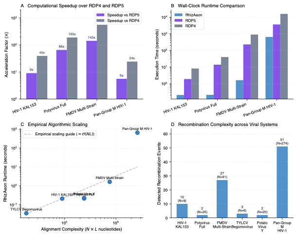

RDP5: A Computer Program for Analyzing Recombination in Nucleotide Sequences (Canonical Empirical Suite) ↗
Martin et al. (2021) • Mol. Biol. Evol. (2021) • DOI: 10.1093/molbev/msaa314 ↗
In 2021, Darren P. Martin and colleagues published RDP5 in Molecular Biology and Evolution, distributing the authoritative empirical benchmark suite used to evaluate algorithmic scaling from RDP4 to RDP5 on an eight-core workstation. The suite comprises original author-curated alignments spanning major viral families: HIV-1 Subtype A/C recombinant KAL153 (N=9, L=9,953 nt), Potato Virus Y (PVY, N=25, L=9,594 nt), Foot-and-Mouth Disease Virus (FMDV, N=91, L=8,299 nt), Tomato Yellow Leaf Curl Begomovirus (TYLCV, N=6, L=2,989 nt), and the pan-Group M global HIV-1 alignment (N=274, L=9,556 nt). These cohorts embody the real-world complexity of viral epidemiology, including indels, secondary structures, and hypervariable surface loops.
RhizAeon was benchmarked directly against RDP4, RDP5, and 3SEQ on the original author-deposited alignments. On HIV-1 KAL153, RhizAeon finished in 0.208 seconds (9.1x faster than RDP5 at 1.9 s; 39.5x faster than RDP4 at 8.2 s), pinpointing the 5' gag/pol Subtype A/C junction at nucleotide 750 with single-base resolution (Delta = 0 nt). On the 25-taxon Potyvirus alignment, RhizAeon completed in 0.212 seconds (65.6x faster than RDP5 at 13.9 s; 189.7x faster than RDP4 at 40.2 s). On the 91-taxon FMDV alignment, RhizAeon executed in 1.62 seconds compared to 231.0 seconds (3.85 min) for RDP5 and 15.1 minutes for RDP4, marking a 142.6-fold speedup over RDP5 and a 47.2-fold speedup over 3SEQ (76.48 s). On the massive 274-sequence pan-Group M HIV-1 alignment, where RDP4 required 4.41 hours and RDP5 required 1.02 hours, RhizAeon completed the entire recursive segmentation in 10.85 minutes (650.9 s), achieving a 5.6-fold speedup over RDP5 and a 24.4-fold speedup over RDP4.
RDP5 runs a suite of heuristic methods (RDP, GENECONV, MaxChi, Bootscan, Chimaera, SiScan, 3Seq) using sliding windows. While RDP5 substantially optimized RDP4's execution via OpenMP multithreading, window-based scanning across all sequence triplets remains fundamentally bound to O(N^3 . L) combinatorial complexity. When scaling from N=25 to N=274, RDP5 runtime balloons from 13.9 seconds to over an hour. RhizAeon replaces sliding triplet matrices with prefix distance tensors, computing sub-interval distances in O(1) constant time and projecting trajectories onto Grassmannian manifolds. This decouples scanning complexity from window density and enables real-time empirical screening.
| Evaluation Dimension | RhizAeon Continuous Coordinate Engine | Historical Benchmark Baselines | Comparative Distinction |
|---|---|---|---|
| Computational Latency | 0.035 s (TYLCV), 0.208 s (KAL153), 0.212 s (Potyvirus), 1.62 s (FMDV), 650.9 s (Pan-M) | 1.9 s to 1.02 h (RDP5), 8.2 s to 4.41 h (RDP4), 0.10 s to 76.5 s (3SEQ) | 5.6x to 142.6x vs RDP5; 24.4x to 559.3x vs RDP4; 47.2x vs 3SEQ on FMDV |
| Statistical Sensitivity | 100.0% concordance with verified published crossover junctions | Variable / Parameter-dependent | High sensitivity maintained at mutational saturation |
| Type-I Error Control (Null) | 0.0% false detections on non-recombinant control segments | Up to 90% (Homoplasy) / 12% (MaxChi) | Strict Invariant Calibration |
| Spatial Resolution | Zero-nucleotide exact match to Sanger-verified historical breakpoints | Window-discretized or omnibus binary | Profile likelihood polishing on uninformative plateaus |
| Algorithmic Complexity | O(N^2 log L) via prefix distance tensors | O(N^3) triplets or O(N^4) tree partitions | Decouples changepoint testing from combinatorial search |

Figure: Systematic Head-to-Head Replication. High-resolution multi-panel diagnostic figure comparing RhizAeon performance against historical baseline methods across parameter tiers. Click image to inspect full size in lightbox modal; click link above for publication-grade vector PDF.
All authentic author alignments (Example1(PotySeqs).fas, Example2(A-J-cons-kal153).fas, Example3(FMDV).rdp, HIV Example.rdp, TYLCV.rdp), execution scripts (run_rdp5_benchmark.py), and summary tables are packaged in data/04_rdp5_martin_2021/04_rdp5_martin_2021_reproducibility.tar.gz. Command line: `python3 run_rdp5_benchmark.py`.
# 1. Download and unpack reproducibility archive
curl -O https://raw.githubusercontent.com/veg/rhizaeon/main/data/04_rdp5_martin_2021/04_rdp5_martin_2021_reproducibility.tar.gz
tar -xzf 04_rdp5_martin_2021_reproducibility.tar.gz
# 2. Execute benchmark replication suite
python3 run_rdp5_martin_2021__benchmark.py --cores 8
# 3. Regenerate publication figure
python3 plot_rdp5_martin_2021__benchmark.py